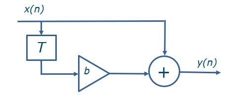
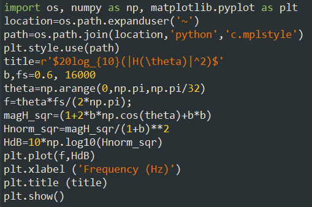
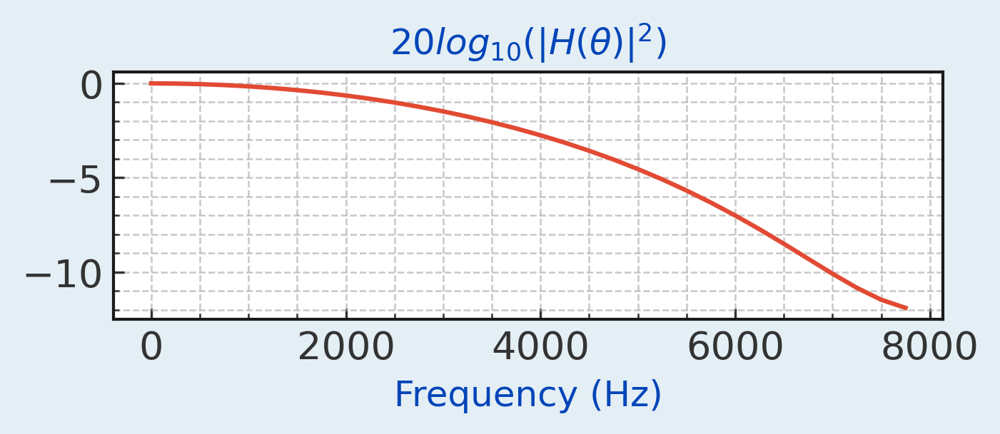

The First Order Finite Impulse Response Filter (FIR) is shown in the Figure below. The output is y(n) = x(n) + bx(n-1). The filter is 1st order because there is a single delay. If there was an x(n-2) term, it would be a 2nd order filter. The number of terms in the output of this filter will be finite as the output does not continue indefinitely. A unit impulse is defined as [1,0,0,0,......]. This represents a 1 level at n=0, followed by a 0 level for n=[1,2,3.......]. If this is connected to the input of the filter, the output is [1,b,0,0,0,0...]. There are only 2 finite terms in the output.

The code below plots the frequency response of the filter. The D.C. gain is normalised to 0 dB and the -3 dB frequency occurs at approximately 4100 Hz. The frequency response of this filter is 1+2bcos(θ)+b2, where θ=2πf/fs. This is also called the magnitude squared frequency response. It represents the squared amplitude of the output as a function of the frequency f. The sampling frequency is fs. The D.C. gain of The filter corresponds to θ=0. This is 1+2bcos(0)+b2=(1+b)2. If we divide the filter frequency response by this value, we can normalise the D.C. gain to 1. This is equivalent to 0 dB. The actual cut-off frequency can is θc=cos-1(2b-1-b2)/(4b) where the cut-off frequency in Hz is fc=θcfs/(2π).Substituting into the equations gives θc=1.6375 and fc=4170 Hz.

